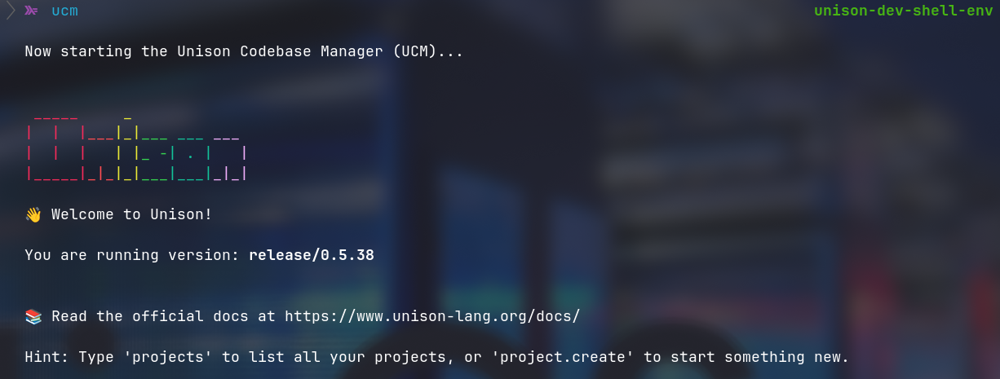
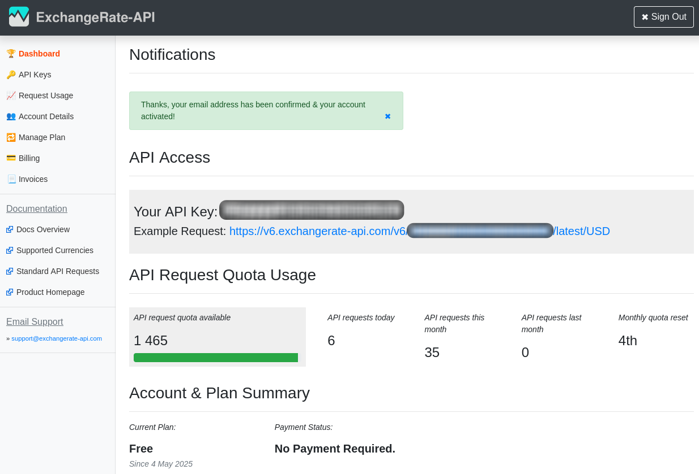
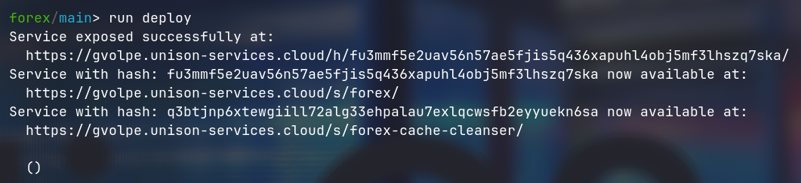
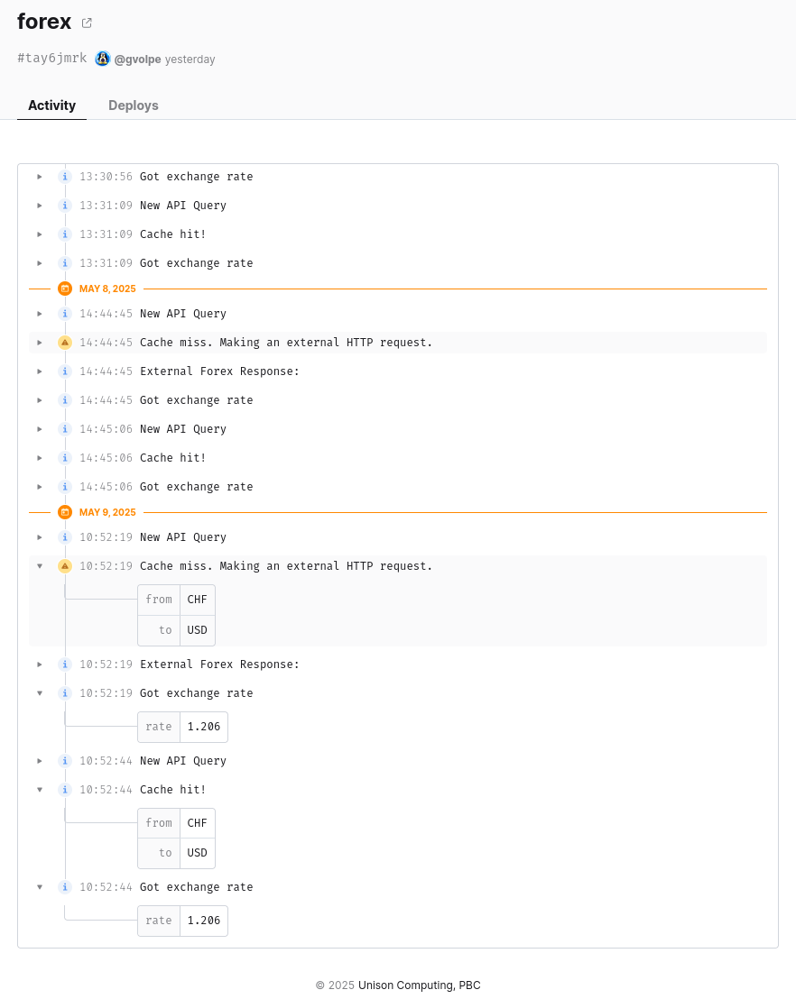
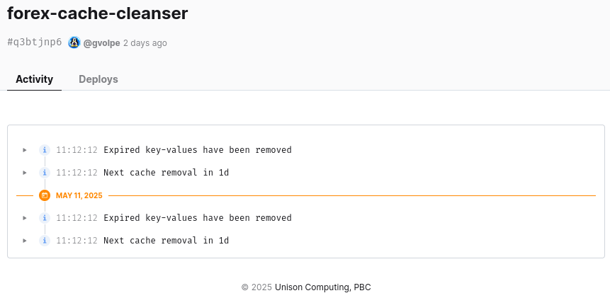
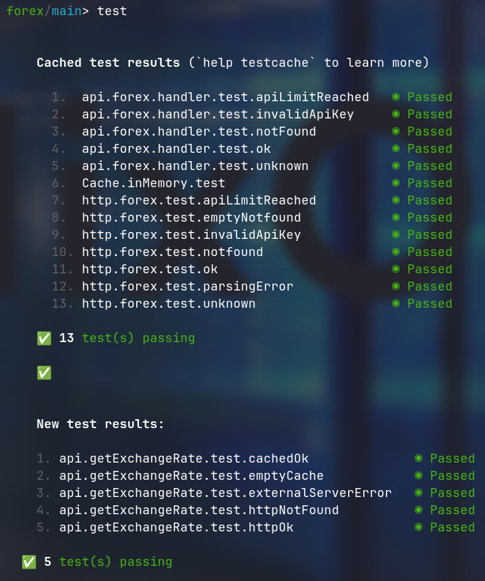
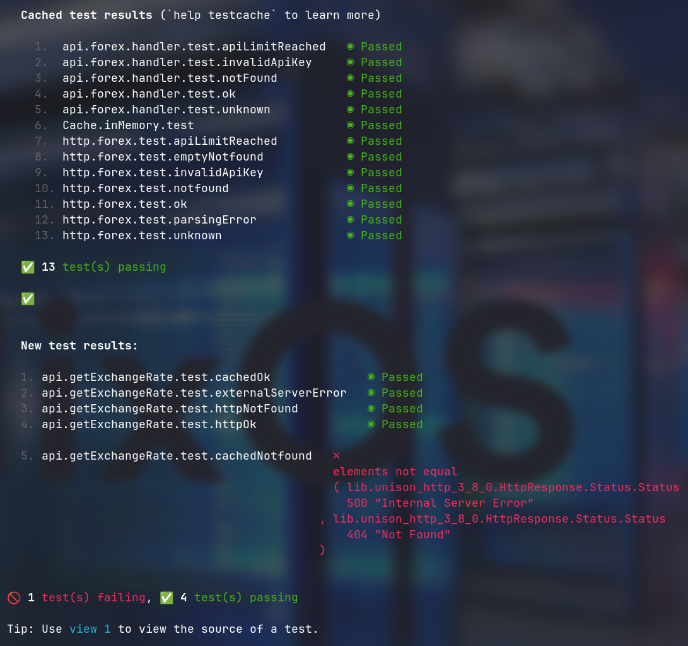

Unison: Forex API & Caching
I have been following the Unison programming language for as long as I can remember, given that its authors are very well-known in the Scala ecosystem. Though, it took me a good few years to finally learn it by immersing myself into their amazing documentation and tutorials.
TL;DR: I love it more and more every single day!
The language itself is easy to learn for anyone coming from a functional programming background. Even their implementation of algebraic effects — called abilities — are quite straightforward. What sets the language apart from others is their interactive approach to writing code.
Unison stores all code on a local database (under ~/.unison by default), which can be shared with others on their platform: Unison Share. Thus, our code doesn’t live on files tracked on a git repository: instead, they need to be fetched from the database to be edited. This is incredibly different from what we, programmers, are used to. It took me a while to get comfortable with this process — forgetting about my vim fuzzy-finder in between — and I would even say it was more challenging than learning the language itself, but it clicked… eventually.
I will spare you the details, however, as I find it quite hard to convey with words how it feels to experience it. So I would leave that to you to explore and find out for yourself. Instead, I would like to share more about my experience using the features that excite me the most in the Unison multiverse.
Learn by doing
A while ago now (~6 years ago), I wrote an exchange rates application in Haskell for fun that exposes an API endpoint to query specific currencies. Internally, it relies on a third-party API that’s rate-limited, so the results are cached in Redis with a configurable expiration time.
I thought this could be good candidate for a rewrite in the Unison language, leveraging their cloud infrastructure and native storage solutions, so I could get acquainted with the language and its radical approach to writing code. After all, learning by doing is always more fun and rewarding.
It all started by creating a new project via UCM: Unison Codebase Manager.

And with me being a nix-head, of course I ended up creating a development shell that provides the ucm program when I enter the directory where I write Unison code. All made possible thanks to unison-nix.
The Project
The requirements for this Foreign Exchange Rates API are rather simple. All we need is a single GET endpoint that returns the exchange rate between two supported currencies.
$ curl https://gvolpe.unison-services.cloud/s/forex/api/rates?from=USD&to=EUR | jq
{
"rate": 0.8885
}And a healthcheck endpoint for good measure.
$ curl https://gvolpe.unison-services.cloud/s/forex/api/healthcheck | jq
{
"db": "6fcf7ba3-4a3b-440e-a225-cc3d8d1917e8 (currencies)"
}The response body is irrelevant here. We mostly care about the HTTP response status being 200 OK.
Internally, we will use a third-party API that’s rate-limited to 1500 requests per month, and it requires an API key used as an authorization bearer token to authenticate HTTP requests.

The challenge will be to cache as many results as possible for a period of 24 hours (see Data Caching Policy) to avoid stale data, but also to optimize the number of external HTTP requests we need to make, while keeping away from getting rate-limited.
In the next few sections, we’ll cover the main components of the forex system. Feel free to follow along by navigating directly through the source code for a more interactive approach. However, before we do, I would like to share my personal wish list from my first pain points I experienced with the language.
Wish list
Unison doesn’t support bounded polymorphism as languages like Haskell do via typeclasses, but different options are being considered. Having a functional programming background, I really miss a few things you can do with typeclasses. See, for example, the Currency definition.
type domain.Currency
= AED | AFN | ALL | AMD | ANG | AOA | ARS | AUDIt consists of an enumeration of 166 values (trimmed here for brevity). However, in our API endpoint we parse the currencies as Text, and need to be able to convert them to a valid Currency. To do this, I had to write a very lengthy and tedious string pattern-matching for every single currency — I wouldn’t have bothered with this if vim macros weren’t a thing 😅
Conversely, in the Haskell version, this is easily achieved via typeclass derivation and enum support.
data Currency = AED | AFN | ALL | AMD | ANG | AOA | ARS | AUD | AWG | AZN
deriving (Enum, Generic, Eq, Ord, Show)
instance FromJSON Currency
instance ToJSON Currency
currencies :: [Currency]
currencies = enumFrom AED
parseCurrency :: Text -> Maybe Currency
parseCurrency t =
let s = pack . show <$> currencies
i = elemIndex (toUpper t) s
in (currencies !!) <$> iTypeclasses here are only a means to an end, so I would love to have the same kind of power while writing Unison code, whether that’s done via typeclasses or something from the future.
Did I miss something obvious in Unison APIs or documentation that would simplify this?
Another thing I miss compared to the usual Git repo approach is having a CI/CD job running regression and smoke tests. With Unison having its own platform for sharing code, deployments are left to running manual commands in ucm (like run deploy) instead of having an automated job taking care of it. I’m sure this will be supported at some point, but until then, it’ll remain on my wish list.
Now with this out of the way, let’s move on with the exciting bits of writing my first Unison project!
HTTP routes
It all starts by defining the API endpoints that are combined via <|>.
api.routes :
HttpRequest
->{Exception, Http, Log, Ask AppCtx, Cache Currency ForexResponse} HttpResponse
api.routes =
use Route <|>
Route.run (getExchangeRate <|> healthcheck)It essentially returns a HttpRequest -> HttpResponse function where the abilities expressed in {} need to be handled. The {Exception, Http, Log} abilities allow us to express what this program needs in order to run. The Ask AppCtx should be familiar to functional programmers: it lets us carry context around functions. Finally, the Cache Currency ForexResponse is the ability that lets us cache responses for each currency. We’ll dive deeper into this topic in the next few sections.
Let’s skip the healthcheck endpoint for now and let’s look at the GET /rates endpoint.
api.getExchangeRate :
'{Route,
Exception,
Http,
Log,
Ask AppCtx,
Cache Currency ForexResponse} ()
api.getExchangeRate = do
use ParseQuery currency
use Parser & /
queries = do (currency "from", currency "to")
rate =
match Route.route GET (s "api" / s "rates" & queries) with
(Some from, Some to) -> service.forex from to
_ -> do throw (BadRequest "invalid from/to query params")
forex.handler (toEither rate)We can observe the Route ability here, which is eliminated in the api.routes function by the Route.run handler. This is essentially how abilities are handled in Unison. In a way, they are similar to interfaces for which we provide a specific implementation when the components are wired up.
The forex.handler function is responsible for building HTTP responses, capturing domain errors.
type http.ForexError
= UnknownError Nat Text
| InvalidApiKey Text
| ApiLimitReached Text
| NotFound Text
| BadRequest Text
api.forex.handler : Either ForexError ExchangeRate ->{Route, Log} ()Forex Service
Ultimately, we have the service.forex function that, given two currencies (from and to, respectively), returns an ExchangeRate with domain errors expressed via the Throw ability.
service.forex :
Currency
-> Currency
-> '{Exception,
Http,
Log,
Throw ForexError,
Ask AppCtx,
Cache Currency ForexResponse} ExchangeRate
service.forex from to = do
use Currency text
fromText = text from
toText = text to
match Cache.get from with
Some (ForexResponse kv)| isSome (Map.get toText kv) ->
Log.info "Cache hit!" [("from", fromText), ("to", toText)]
ExchangeRate <| Optional.getOrBug "unreachable" (Map.get toText kv)
_ ->
Log.warn
"Cache miss. Making an external HTTP request."
[("from", fromText), ("to", toText)]
response@(ForexResponse kv) = http.forex from to ()
Cache.set from response
match Optional.map ExchangeRate (Map.get toText kv) with
Some rate -> rate
None -> throw (NotFound "cache 404")It attempts to fetch the currency data from the cache via Cache.get. If there’s no cached value, it falls-back to calling the third-party API via the http.forex client — caching the response for subsequent use.
The Cache ability is defined as follows:
ability Cache k v where
get : k ->{Cache k v} Optional v
set : k -> v ->{Cache k v} ()
evict : k ->{Cache k v} ()
expire : {Cache k v} ()The service only uses the first two functions, but it also allows us to remove a specific key or remove all key-values that have expired. We’ll dive into the internals of the handler shortly.
HTTP client
At last, we have the HTTP client that lets us fetch data from the third-party API.
http.forex :
Currency
-> Currency
-> '{Exception, Http, Log, Throw ForexError, Ask AppCtx} ForexResponse
http.forex from to =
do
(AppCtx _ _ (ApiKey apiKey)) = ask
use Currency text
use Text ++
uri = URI.parse ("https://v6.exchangerate-api.com/v6/latest/" ++ text from)
request =
HttpRequest.addHeader
"Authorization" ("Bearer " ++ apiKey) (HttpRequest.get uri)
response = Http.request request
match HttpResponse.status response with
Status 200 _ ->
responseBody = bodyText response
info "External Forex Response: " [("body", responseBody)]
match catch do Decoder.run ForexResponse.fromJson responseBody with
Left (Failure _ e _) ->
Log.error e []
throw (UnknownError 500 "JSON decoding failure")
Right resp@(ForexResponse kv) ->
match Map.get (text to) kv with
Some v -> resp
None -> throw (NotFound (text from ++ " -> " ++ text to))
Status 403 e -> throw (InvalidApiKey e)
Status 404 e -> throw (NotFound e)
Status 429 e -> throw (ApiLimitReached e)
Status code e -> throw (UnknownError code e)In order to authorize requests, an API key is needed, which we can fetch from the context via the Ask ability. We will soon learn about the rest of the data our application context holds.
Once the request is fired up, we pattern-match on the HTTP response status code and model each response accordingly. Domain errors are expressed via the Throw ability.
Deploy
For the fun part, let’s see how easy it is to deploy our service to the cloud!

Let’s ignore the forex-cache-cleanser service for a minute, and let’s focus on the forex service instead. We can observe the latest version of the service exposed at https://gvolpe.unison-services.cloud/s/forex now points to a specific service hash showed right above. Unison will ensure this URL stays up-to-date.
The deploy function is our main entry point based on the Cloud.main handler.
deploy : '{IO, Exception} ()
deploy =
Cloud.main do
use base ignore
env = Environment.named "forex"
db = Database.named "currencies"
Database.assign db env
apiKey = Cloud.submit env ApiKey.fetch
cacheConfig = CacheConfig "currencies" (Remote.Duration.hours 24)
appCtx = AppCtx db cacheConfig apiKey
httpServiceHash =
Cloud.deployHttp env (req ->
Ask.provide appCtx do Cache.persistent do api.routes req)
httpServiceName = ServiceName.named "forex"
ignore <| ServiceName.assign httpServiceName httpServiceHashHere’s where all the abilities need to be eliminated, resulting only in {IO, Exception}, which are handled by the Unison runtime.
Cache k vis eliminated byCache.persistent.Ask ctxis eliminated byAsk.provideHttp, Log, Remoteare eliminated byCloud.deployHttp, which introduces theCloudability.Cloudis eliminated by theCloud.mainhandler.
Now we can monitor our application logs in the Unison Cloud console.

Quite neat! Isn’t it? Now let’s move on to the next exciting topic.
Caching
The main handler for the Cache ability is based on an internal Cell — a table that stores a single durable value, which requires a Database to be created.
Without further ado, let’s look at the implementation and later discuss the relevant pieces.
Cache.persistent : '{g, Cache k v} r ->{g, Exception, Remote, Ask AppCtx} r
Cache.persistent interactions =
use Cell modify
use Instant + >
use Map delete
(AppCtx db (CacheConfig cacheName cacheExpiration) _) = ask
expTime = toBaseDuration cacheExpiration
hasNotExpired : Instant -> (v, Instant) -> Boolean
hasNotExpired now = cases (value, ts) -> ts + expTime > now
impl : Cell (Map k (v, Instant)) -> Request {Cache k v} r -> r
impl cell = cases
{ pure } -> pure
{ Cache.get key -> resume } ->
now = now!
lookup = match Map.get key (Cell.read cell) with
Some x@(v, _) | hasNotExpired now x -> Some v
Some _ ->
modify cell (kv -> (delete key kv, ()))
None
None -> None
handle resume lookup with impl cell
{ Cache.set key value -> resume } ->
ts = now!
modify cell (kv -> (Map.put key (value, ts) kv, ()))
handle resume() with impl cell
{ evict key -> resume } ->
modify cell (kv -> (delete key kv, ()))
handle resume() with impl cell
{ expire -> resume } ->
now = now!
modify cell (kv -> (Map.filter (hasNotExpired now) kv, ()))
handle resume() with impl cell
handle interactions() with impl (Cell.named db cacheName Map.empty)A Cache k v is internally represented as a Map k (v, Instant) stored in a Cell.
impl : Cell (Map k (v, Instant)) -> Request {Cache k v} r -> rThe Instant value represents the time when the value was written to the cache (see how Cache.set is handled). When we look-up a key-value from the cache, we also look at the timestamp and check if it hasn’t expired yet. If it did, then the key-value is removed from the cache.
This method of cache invalidation (one of my favorite topics in software engineering) is also known as “passive”, where only data that’s being accessed is checked for expirations. However, in bigger systems, data that is not accessed can account for considerable storage space when neglected.
Arguably, in this simple application we don’t need an “active” cache invalidation method. In the original Forex application written in Haskell, cache expiration was already taken for granted, as Redis handles everything. However, I absolutely love a good challenge, and this brings up a great opportunity to further explore what Unison has got to offer.
To finish up with the implementation of this handler, the evict function is based on Map.delete whereas the expire function is based on Map.filter, filtering out the expired key-values from the internal map.
Active Cache Invalidation
A daily cron job calling Cache.expire will be one valid way of implementing active cache invalidation. Now can we do this with Unison services that are deployed via the Cloud handlers? Unfortunately, this only suits applications which follow a request-response cycle.
For repeated scheduled jobs or queueing systems, we can leverage the Daemon ability, which is considered a low-level cloud utility and it’s a paid feature.
We could start defining a simple scheduled job that calls itself every 24 hours.
daemon.job :
'{Exception, Remote, Ask AppCtx, Cache Currency ForexResponse} ()
daemon.job = do
use Text ++
(AppCtx _ (CacheConfig _ cacheExpiration) _) = ask
durationText = Duration.toText (toBaseDuration cacheExpiration)
impl : '{Exception, Remote, Cache Currency ForexResponse} ()
impl = do
Log.info ("Next cache removal in " ++ durationText) []
Remote.sleep cacheExpiration
Cache.expire
Log.warn "Expired key-values have been removed" []
forever implHowever, there’s currently a big limitation and we can’t monitor daemon logs in the Unison Cloud console as we do with regular services; its API is limited to streaming to the ucm console. For this reason, we’ll use a “logging service”, which the daemon can natively call via the Services ability.
Firstly, we’ll create the program that will log the messages.
type domain.LogMsg = { level : Level, text : Text, json : Json }
daemon.logJson : LogMsg ->{Exception, Log} ()
daemon.logJson = cases
LogMsg level msg json -> atLevel.lazyJson level (do msg) do jsonWe will then write a service named “forex-cache-cleanser” whose only resposibility is to run the logJson program. The Cloud.deploy handler can be used to deploy this service and get its hash.
deploy : '{IO, Exception} ()
deploy =
Cloud.main do
...
logServiceHash : ServiceHash LogMsg ()
logServiceHash = Cloud.deploy env daemon.logJson
logServiceName = ServiceName.named "forex-cache-cleanser"
ignore <| ServiceName.assign logServiceName logServiceHash
daemon.deploy env do
provide appCtx do persistent (cacheCleanser logServiceHash)Next, we invoke the daemon.deploy function with the cacheCleanser program that takes the logging service hash as input. It uses the Daemon.deploy handler, which is analogous to Cloud.deploy for regular services.
daemon.deploy :
Environment -> '{Exception, Services, Remote} () ->{Exception, Cloud} ()
daemon.deploy env program =
cleanserDaemon = Daemon.named "forex-cache-cleanser-daemon"
cleanserHash = Daemon.deploy cleanserDaemon env program
Daemon.assign cleanserDaemon cleanserHashThe final definition for the daily scheduled job is called cacheCleanser and is defined as follows.
daemon.cacheCleanser :
ServiceHash LogMsg ()
-> '{Exception, Services, Remote, Ask AppCtx, Cache k v} ()
daemon.cacheCleanser logService = do
use Services call
use Text ++
logMsg : Text -> '{Remote} LogMsg
logMsg msg = do
time = now! |> Instant.toRFC2822
LogMsg Info msg (Json.object [("timestamp", Json.text time)])
(AppCtx _ (CacheConfig _ cacheExpiration) _) = ask
durationText = Duration.toText (toBaseDuration cacheExpiration)
impl : '{Exception, Services, Remote, Cache k v} ()
impl = do
call logService (logMsg ("Next cache removal in " ++ durationText) ())
Remote.sleep cacheExpiration
Cache.expire
call logService (logMsg "Expired key-values have been removed" ())
forever implAt last, we can now monitor the daemon logs in the Unison Cloud console.

This is it! We’ve effectively implemented active cache invalidation by running a daily scheduled job using Unison’s Daemon API. It’s still early days, so I believe it will continue to evolve, and I’m personally hoping that in the near future we are able to easily monitor logs like we do with regular services.
Testing
We couldn’t finish up this blog-post without talking about tests!

There are a bunch of tests defined in this project, and the image above shows what it looks like to run the entire test suite in the UCM console. We can observe that 13 tests correspond to cached test results, whereas the remaining 5 tests were run once again.
The reason is that Unison doesn’t run tests until a function that’s being used changes its hash. When this is the case, all those tests affected by the hash change will be re-run. Otherwise, the tests results displayed in the console will be those that have been previously cached.
Here’s one of the tests for the HTTP client that expects a successful response.
http.forex.test.ok : [Result]
http.forex.test.ok = test.verify do
body = "{\"conversion_rates\": {\"EUR\": 1.2, \"JPY\": 5.24}}"
resp = HttpResponse.ok (Body.fromText body)
response = logAskThrow do Http.stub resp (http.forex USD EUR)
expected = ForexResponse (List.toMap [("EUR", 1.2), ("JPY", 5.24)])
test.ensureEqual response expectedIt invokes the http.forex function, which has the following type signature (recap):
http.forex :
Currency
-> Currency
-> '{Exception, Http, Log, Throw ForexError, Ask AppCtx} ForexResponseIn this case, we’re only interested in the Http ability. We don’t want to deal with the other ones, so we can eliminate them with “stub” handlers defined under the tests namespace, e.g.
tests.handler.logAsk : '{g, Log, Ask AppCtx} a ->{g} a
tests.handler.logAsk program =
db = Database (Database.Id.Id "test") "test"
cfg = CacheConfig "test" (Remote.Duration.hours 2)
ctx = AppCtx db cfg (ApiKey "test")
provide ctx do Log.stub program
tests.handler.logAskThrow : '{g, Log, Throw e, Ask AppCtx} a ->{g} a
tests.handler.logAskThrow program = Throw.toBug do logAsk programHere’s another interesting test that requires a different set of abilities.
api.getExchangeRate.test.cachedOk : [Result]
api.getExchangeRate.test.cachedOk = test.verify do
keyValue = (USD, ForexResponse (List.toMap [("EUR", 1.25)]))
route = cacheRoute getExchangeRate keyValue
request = HttpRequest.get (URI.parse "/api/rates?from=USD&to=EUR")
response = runRoute route request
test.ensureEqual (HttpResponse.status response) (Status 200 "OK")It verifies the result comes from the cache, for which we use the Cache.inMemory handler.
tests.builder.cacheRoute :
'{Route, Exception, Http, Remote, Log, Ask AppCtx, Cache k v} ()
-> (k, v)
-> '{Route, Exception, Remote} ()
tests.builder.cacheRoute api kv = do
Cache.inMemory do
Cache.set (at1 kv) (at2 kv)
Http.stub' do logAsk apiTo summarize this section, the following image shows that tests can sometimes fail.

Have a look at the other available tests and let me know if we can do better!
Final thoughts
Quoting their official website, I couldn’t agree more with it.
Unison is a friendly programming language from the future: statically-typed, functional, and a lot of fun 😄
I will certainly continue to learn what this great language has to offer while having lots of fun. There are multiple applications that can be written in it, but if there’s an area where you should seriously consider it, is for building distributed systems deployed to their cloud infrastructure.
Last but not least, I would like to give a big shout out to the Unison team for all the great work they are doing. I had a few questions when going through the documentation and you guys have been awesome!
Check out the source code and discover more: https://share.unison-lang.org/@gvolpe/forex.
Best, Gabriel.